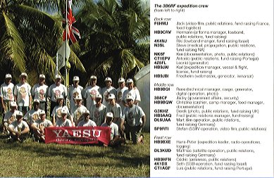
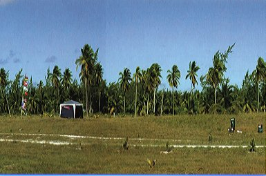

話題の局・QSL
3B6RF・Agarega

3B6RF


2001年5月6日-15日にAgaregaから運用した3B6RF 珍しい3枚折、6面のQSLOP.HB9BXE.HB9JAI.HB9BQI.HB9BQW.HB9HFN.HB9CRV.HB9AAQ HB9JBI.CT1EPV.CT1AGF.DL3KUD.DL6UAA.F6HMJ.G3KHZ NK6F.N3SL.SP9RTI.3B8CF.4Z5FL.4X1DX.4X4NJ
3B6RF


2001年5月6日-15日にAgaregaから運用した3B6RF 珍しい3枚折、6面のQSLOP.HB9BXE.HB9JAI.HB9BQI.HB9BQW.HB9HFN.HB9CRV.HB9AAQ HB9JBI.CT1EPV.CT1AGF.DL3KUD.DL6UAA.F6HMJ.G3KHZ NK6F.N3SL.SP9RTI.3B8CF.4Z5FL.4X1DX.4X4NJ